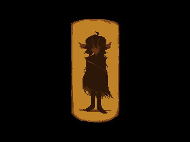

PREFACIO
A profecia, na qual fora sussurrada entre as sombras.
A lenda deste Mundo.
<DELTARUNE.>
" id="hero">Um mundo mergulhado em pura luz.
Abaixo, crescia uma eterna noite.
Se fontes fossem libertas, O Rugido ocorreria.
E titas se formariam de olhos escurecidos.
A luz e as trevas, ambos em desespero.
Uma contagem marcava para o fim da Terra.
Eis que, em esperancas arruinadas eles enviam.
Tres herois no fim do Mundo.
O primeiro heroi. A divina representacao do anjo.

O segundo heroi. [REDATADO]
O terceiro heroi. [REDATADO]
O pecado original, tao profano ao derramar tal sangue.
Devera se encontrar contra o destino final dos herois.
Eles ouvirao o som dos ceus.
Eles verao a cauda do inferno rastejar-se.
E enfim. Quando toda a esperanca esta perdida para tal conto.
A tragedia final se apresenta.
Para salvar os mundos, ha somente um meio.
[REDATADO]
Somente entao os Mundos poderao respirar mais uma vez.